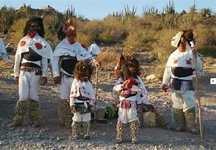
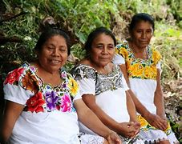

Los Mayo o Yoremes, son un pueblo indígena mexicano cuyos asentamientos se encuentran
en los municipios El Fuerte, Choix, Guasave, Sinaloa de Leyva y Ahome del estado
de Sinaloa y en los municipios Alamos, Etchojoa, Navojoa y Huatabampo del estado de Sonora.
Este grupo de personas corresponde al grupo
indígena mayo, que no debe confundirse con
los mayas que habitan en el sureste de México.
imagenes
Precios
audio
$170

$150

$200
En el último censo (2010), se registraron 39,759 hablantes de
lengua mayo. La lengua más cercana al mayo es el yaqui.
Se considera que el mayo está en alto riesgo de desaparición.